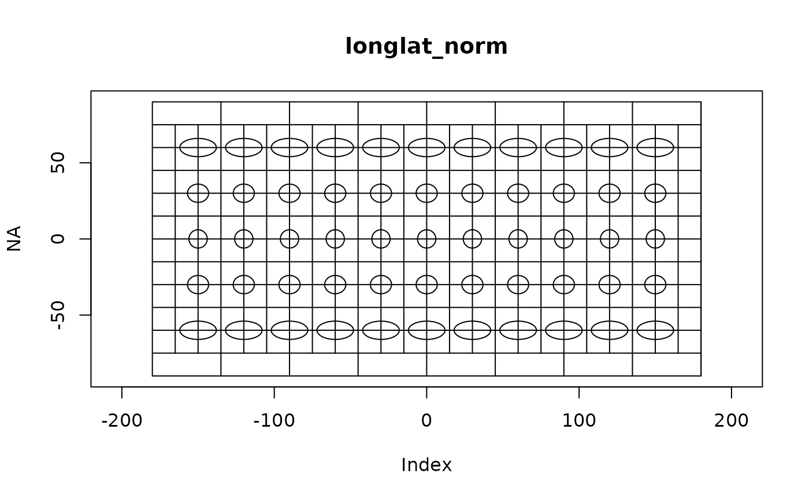
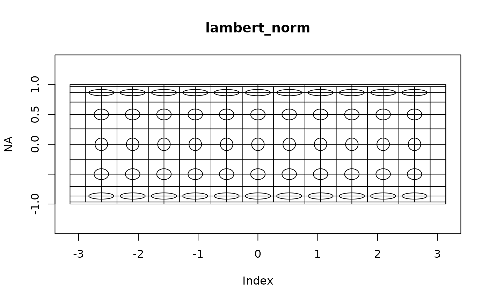
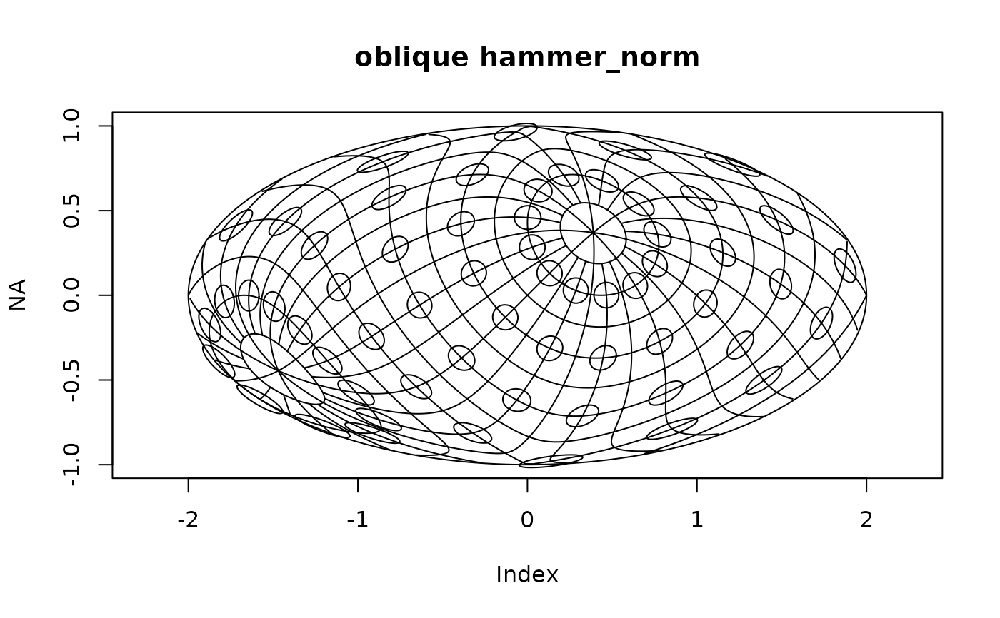

![[Experimental]](figures/lifecycle-experimental.svg) Plot the outline of a
Plot the outline of a crs
or fm_crs() projection, with optional graticules (transformed parallels
and meridians) and Tissot indicatrices.
Usage
fm_crs_plot(
x,
xlim = NULL,
ylim = NULL,
outline = TRUE,
graticule = c(15, 15, 45),
tissot = c(30, 30, 30),
asp = 1,
add = FALSE,
eps = 0.05,
...
)
fm_crs_graticule(
x,
by = c(15, 15, 45),
add = FALSE,
do.plot = TRUE,
eps = 0.05,
...
)
fm_crs_tissot(
x,
by = c(30, 30, 30),
add = FALSE,
do.plot = TRUE,
eps = 0.05,
diff.eps = 0.01,
...
)Arguments
- x
A
crsorfm_crs()object.- xlim
Optional x-axis limits.
- ylim
Optional y-axis limits.
- outline
Logical, if
TRUE, draw the outline of the projection.- graticule
Vector of length at most 3, to plot meridians with spacing
graticule[1]degrees and parallels with spacinggraticule[2]degrees.graticule[3]optionally specifies the spacing above and below the first and last parallel. Whengraticule[1]==0no meridians are drawn, and whengraticule[2]==0no parallels are drawn. Usegraticule=NULLto skip drawing a graticule.- tissot
Vector of length at most 3, to plot Tissot's indicatrices with spacing
tissot[1]degrees and parallels with spacingtissot[2]degrees.tissot[3]specifices a scaling factor. Usetissot=NULLto skip drawing a Tissot's indicatrices.- asp
The aspect ratio for the plot, default 1.
- add
If
TRUE, add the projecton plot to an existing plot.- eps
Clipping tolerance for rudimentary boundary clipping
- ...
Additional arguments passed on to the internal calls to
plotandlines.- by
The spacing between
(long, lat, long_at_poles)graticules/indicatrices, see thegraticuleandtissotarguments.- do.plot
logical; If TRUE, do plotting
- diff.eps
Pre-scaling
Functions
fm_crs_graticule(): Constructs graticule
information for a given CRSorfm_crs()and optionally plots the graticules. Returns a list with two elements,meridiansandparallels, which areSpatialLinesobjects.fm_crs_tissot(): Constructs Tissot indicatrix information
for a given CRSorfm_crs()and optionally plots the indicatrices. Returns a list with one element,tissot, which is aSpatialLinesobject.
Author
Finn Lindgren finn.lindgren@gmail.com
Examples
# \donttest{
if (require("sf") && require("sp")) {
for (projtype in c(
"longlat_norm",
"lambert_norm",
"mollweide_norm",
"hammer_norm"
)) {
fm_crs_plot(fm_crs(projtype), main = projtype)
}
}
#> Loading required package: sf
#> Linking to GEOS 3.12.1, GDAL 3.8.4, PROJ 9.4.0; sf_use_s2() is TRUE
#> Loading required package: sp


if (require("sf") && require("sp")) {
oblique <- c(0, 45, 45, 0)
for (projtype in c(
"longlat_norm",
"lambert_norm",
"mollweide_norm",
"hammer_norm"
)) {
fm_crs_plot(
fm_crs(projtype, oblique = oblique),
main = paste("oblique", projtype)
)
}
}

# }